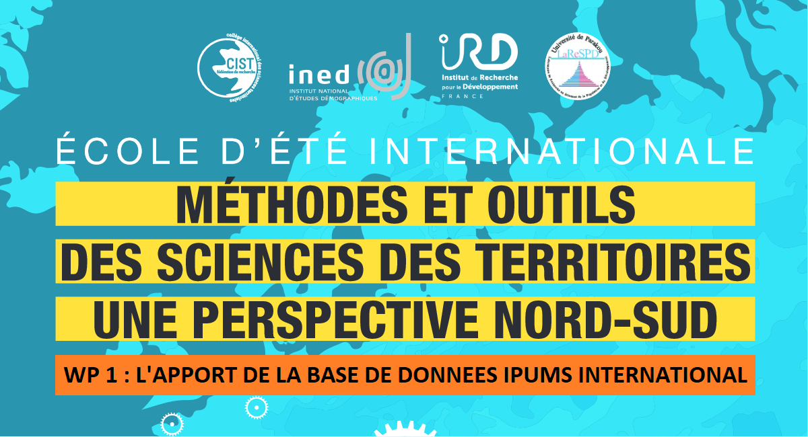

L’INTERET PEDAGOGIQUE DES DONNEES IPUMS INTERNATIONAL
Une ressource majeure pour l’EE CIST 2023 ?
Préface
Ce document de travail vise à explorer les possibilités d’utilisation de la base de données IPUMS International dans le cadre de l’école d’été CIST 2022-2023 “Outils et méthodes des sciences territoriales : une perspective Nord-Sud”.Il s’agit plus précisément de constituer des jeux de données statistiques et cartographiques permettant de comparer les recensements de plusieurs pays ou d’un pays à différentes dates.
Comparaison des recensements de cinq pays africains
La seconde partie du document propose de vérifier la possibilité de construire des jeux de données comparables pour plusieurs pays. On a retenu pour cela les derniers recensements disponibles sur IPUMS pour les pays africains participant à l’EE CIST2023. Le Niger et la Côte d’Ivoire ne font malheureusment pas partie actuellement des pays présents dans la base IPUMS International mais ils pourront faire l’objet d’extraction à partir d’autres sources. Au total nous avons donc récupéré des échantillons de 10% de la population et des ménages pour les pays et les années suivantes :
- RP Bénin, 2013
- RP Burkina Faso, 2006
- RP Mali, 2009,
- RP Sénégal, 2013
- RP Togo, 2009
En nous limitant aux variables harmonisées par IPUMS qui sont présentes dans les cinq pays, nous avons procédé à une série de test permettant de vérifier la possibilité de reproduire les mêmes analyses sur chacun des pays. Ces tests concernent des analyses simples débouchant sur des jeux de données qui pourraient fournir une matière première utile à de nombreux modules :
Populations, superficie et densité. Nous avons construit ces indicateurs pour chaque pays à deux niveaux territoriaux d’agrégation. Après les avoir visualisé sous forme de cartes classiques, nous avons testé la possibilité de construire des cartogrammes démographiques de chaque pays où la surface des unités territoriales est proportionelle à leur population (Chapter 4)
Indicateurs de développement. En se limitant au cas de l’électrification des ménages, nous avons testé la possibilité de constituer des cartes comparables du taux d’électrification pour chacun des cinq pays et à deux niveaux d’agrégation administrative (Chapter 5)
Age, sexe, urbanisation. Nous avons testé la possibilité de créer des tableaux de contingence multidimensionnelles permettant de définir des sous-population en fonction de leur âge, de leur sexe et de leur milieu urbain ou rural. Ces tableaux permettent de créer des images simples comme des pyramides des âges ou des cartographies du % de jeunes en milieu urbain ou rural.Mais ils permettent aussi d’évaluer les effectifs disponibles dans chaque cas de croisement structurel afin d’estimer les erreurs d’e calcul’estimation que cela impliquerait si l’on voulait calculer d’autres indicateurs (Chapter 6)
Comparaison des recensements d’un pays à plusieurs dates
La dernière partie examine la possibilié de comparer les évolutions d’un pays à plusieurs dates de recensement grâce au travail d’harmonisation des indicateurs et des niveaux territoriaux réalisé par IPUMS. Nous avons pris l’exemple des recensements du Bénin de 1979, 1992, 2002 et 2013 pour tester une méthode qui serait reproductible dans d’autres pays comme le Burkina Faso (1996 et 2006), le Mali (1987, 1998, 2009) ou le Sénégal (1998, 2002, 2013).
l’extraction des données. Elle a été menée en se focalisant sur un jeu de variables relatifs à la mobilité des personnes au cours du temps puisque c’est précisément un sujet où le temps joue un rôle décisif. En dehors des caractéristiques individuelles, nous avons extrait les variables permettant de reconstituer à la fois les migrations durée de vie (depuis la naissance) et les dernières migrations déduite du domicile précédent et de la durée de présence dans la résidence actuelle (Chapter 7).
Les migrations durée de vie. Elles ont été utilisés pour un premier test de création d’indicateurs comparables aux quatres dates de recensement. Pour chaque département ou commune, nous avons calculé pour chaque recensement les personnes “stables” (nées dans l’unité territoriales de recensement), “immigrantes” (nées dans une autre unité territoriale) et “émigrantes” (présentes dans une autre unité territoriale que celle de leur naissance). Nous en avons déduite ensuite un certain nombre d’indicateurs cartographiables tels que le solde ou le volume migratoire apparents (Chapter 9).
Les parcours de vie. Ils ont fait l’objet d’une analyse plus complexe visant à combiner ce que l’on peut savoir des parcours de vie (lieu de naissance, dernière résidence, résidence actuelle) avec des critères individuels tels que l’âge, le sexe, le niveau de diplôme, etc (Chapitre 9)
Comment utiliser IPUMS ?
La première partie du document rappelle les conditions générales d’utilisation des données IPUMS International et les modalités spécifiques d’emploi dans le cadre de préparation d’enseignements ou de formations professionnelles (Chapter 1). Elle détaille ensuite à l’aide d’un exemple les étapes d’acquisition d’échantillons de données décrivant les individus ou les ménages issues d’un ou plusieurs recensements (Chapter 2). Enfin, elle montre comment importer les fonds de carte correspondant soit à un recensement précis, soit à un ensemble de dates de recensement d’un même pays ce qui suppose une harmonisation des découpages (Chapter 3).